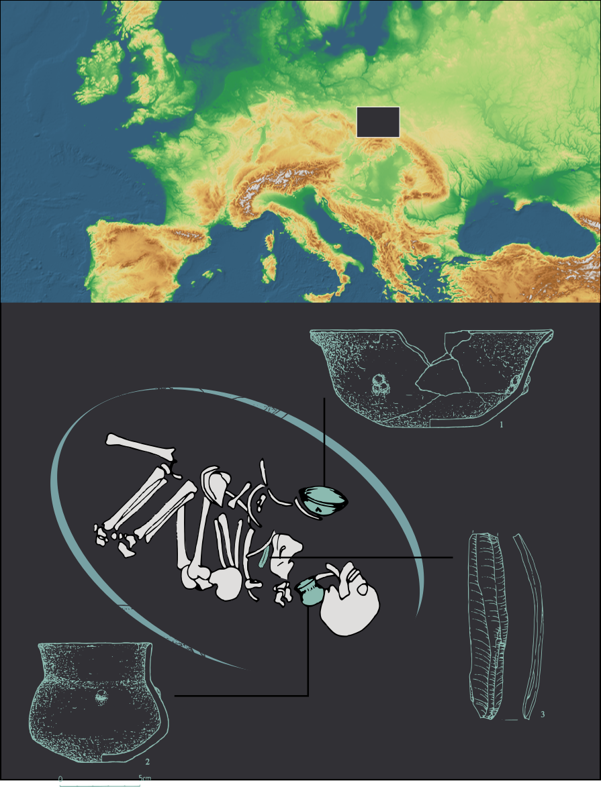
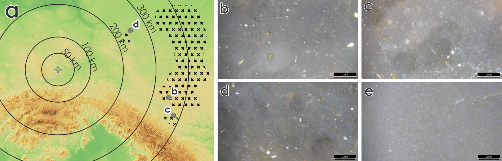
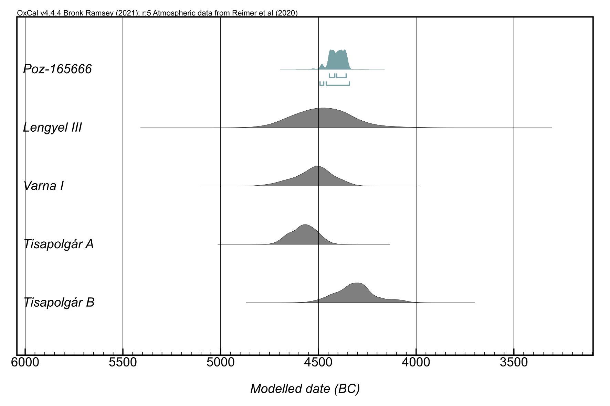
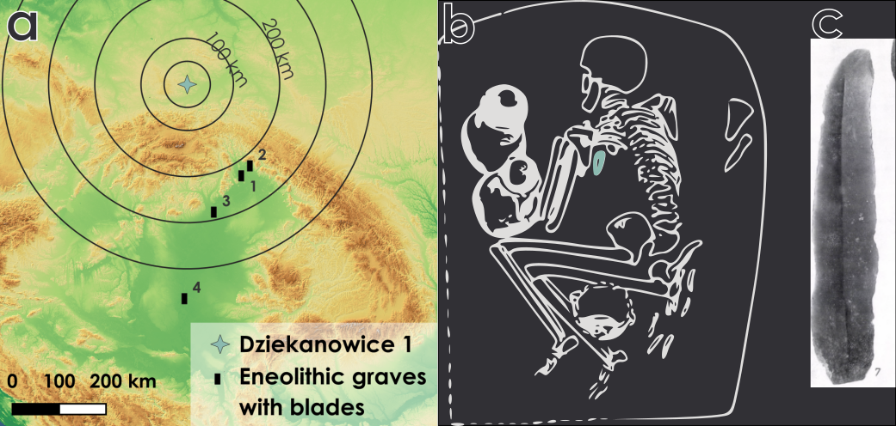

Intentional Offering or Accidental Intrusion: A Flint Blade in the Burial of a Child
![]()
Excavations at Dziekanowice, site 1 (southern Poland), uncovered a child burial of the Pleszów-Modlnica Group (PMG) containing two PMG-style vessels and a Volhynian flint blade Figure 1.

Volhynian flint outcrops c. 300–400 km east of the site Figure 2: a (Ryzhov, Stepanchuk, and Sapozhnikov 2005), although macroscopically similar material occurs in the Chełm Hills Region (Libera et al. 2014). Microscopic observations indicate closer affinity with Volhynian sources Figure 2: b-e.

Since such imports are rare in PMG assemblages and more typical of later periods, the blade was initially regarded as a Funnel Beaker Culture intrusion (Libera and Zakościelna 2011; Trela-Kieferling and Stefański 2022: 91).
The grave belonged to an 8–9-year-old child. Although the shoulder area was disturbed, probably by animal bioturbation, the burial remained largely articulated, and the blade was recovered from the disturbed zone (Jaśkowiak and Milisauskas 2001: 124–126; Milisauskas et al. 2016: 111–113). Radiocarbon dating (Poz-165666, 5570±40 BP; c. 4500–4300 BC) confirms the PMG attribution Figure 4, predating most regional Volhynian flint blades and the widespread use of technologies required to produce artefacts of comparable size (Trela-Kieferling and Stefański 2022; Trela-Kieferling 2021: 196–197; comp. Dzieduszycka-Machnikowa and Lech 1976: 137–139).

The blade was detached from a regular single-platform core, probably by indirect percussion Figure 3: e-f (Dzieduszycka-Machnikowa and Lech 1976: 144; Wąs 2011). Use-wear analysis revealed slight edge damage and limited polish but no diagnostic traces of use Figure 3: a-d. The blade was therefore probably unused, with observed traces resulting from handling, hafting or storage rather than work (van Gijn 2010: 27–28). This contrasts with later Volhynian flint blades, which commonly display intensive use-wear (Kufel-Diakowska et al. 2019; Mączyński and Milisauskas 2023; Oberc 2024).
PMG developed during the Eneolithisation of the Carpathian Basin and reflects changing patterns of raw-material circulation and funerary symbolism (Kadrow 2015). Although lithic grave goods have earlier precedents, an unused imported blade is exceptional in this period (Czekaj-Zastawny 2009; Kadrow 2009; Kaczanowska 2009).

Comparable burial assemblages occur in Varna, Durankulak and the Tiszapolgár culture, while finds from Tibava, Veľké Raškovce, Tiszapolgár-Basatanya and Deszk suggest that Volhynian flint blades formed part of a wider Eneolithic symbolic package Figure 4, Figure 5 (Kadrow 2015; Bognár-Kutzian 1972; Kovács and Váczi 2007; Chapman et al. 2006; Kaczanowska 1985). The position of the Dziekanowice child burial may indicate adoption of male-associated funerary symbolism, whereas the modest grave inventory may reflect either young age or low social status (Kovács and Váczi 2007).

Despite disturbance, the blade cannot be explained as later contamination. Its chronology, raw material, technology, lack of use-wear and burial context suggest an early manifestation of symbolic practices that became more widespread during the Eneolithic. Although Neolithic graves from the Upper Vistula Basin remain scarce, the deposition of flint blades in burials continued in southern Poland during the 4th millennium BC (Kadrow and Zakościelna 2022).
Acknowledgements
This research was funded in whole or in part by the Polish National Science Centre (NCN PL) 2022/45/N/HS3/03475 From waste to workshop. Activity areas in settlements of the Pleszów-Modlnica Group of the Lengyel-Polgar Circle from western Lesser Poland in the light of functional and spatial analyses of lithic artefacts.